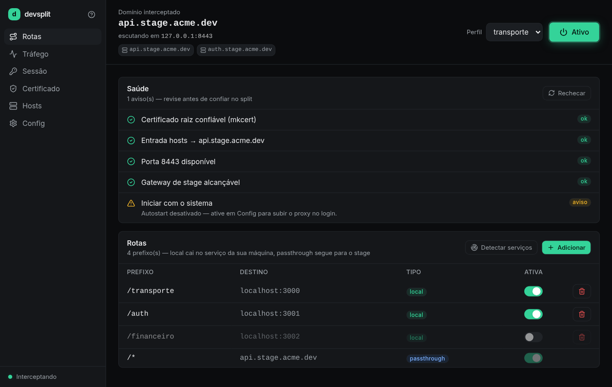
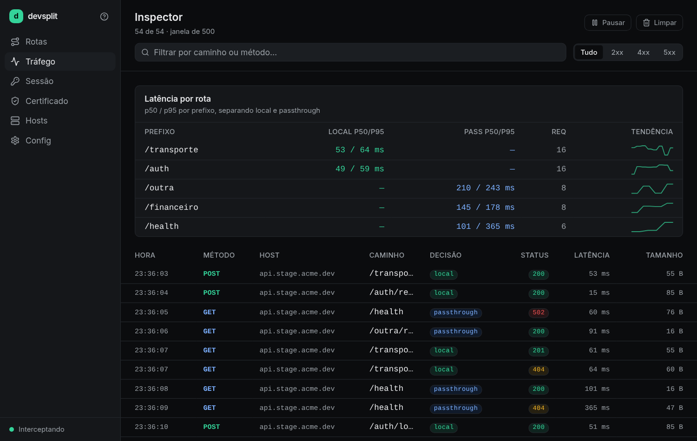
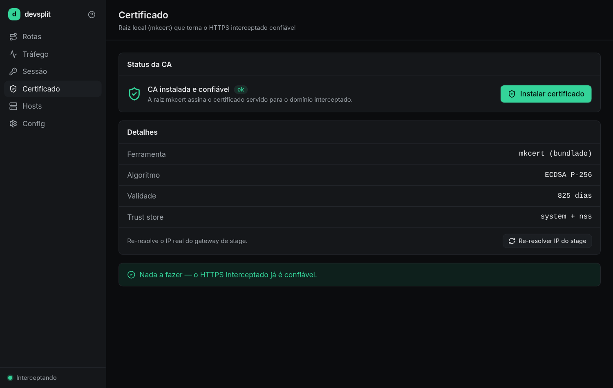

Split por path-prefix
Escolha os prefixos que rodam local (/transporte, /auth). O mais específico vence; o resto faz passthrough.
cargo run
Linux pronto · macOS/Windows via CI
O devsplit intercepta o gateway do seu stage e manda os
caminhos que você escolher pro seu localhost. O resto faz
passthrough pro ambiente real — com o certificado validado.
Sem Docker. Sem subir 10 microsserviços. Sem mudar o front.

RabbitMQ, observabilidade e uma dúzia de microsserviços NestJS conversando entre si — só pra rodar um pedaço. PC fraco não aguenta, e o setup local vira um inferno.
.env pra apontar serviçosO domínio do stage resolve pro seu PC. O devsplit termina o TLS com um cert confiável e decide, por prefixo, o que vai pro local e o que segue pro stage real.
/transporte, /auth → seu localhost
/* → stage real (cert validado por SNI)
Escolha os prefixos que rodam local (/transporte, /auth). O mais específico vence; o resto faz passthrough.
O mkcert instala uma CA que o navegador confia. HTTPS de verdade no localhost — sem aviso de cert.
Conecta no IP real do stage e valida o cert remoto por SNI. Nunca desabilita a verificação.
Resolve o IP real ignorando o /etc/hosts — então o proxy nunca conecta em si mesmo.
Upgrade e túnel byte-a-byte após o 101. socket.io funciona sem nenhuma config extra.
Cada request com decisão, status e latência p50/p95 por rota. Copy-as-curl e export HAR.
Liga/desliga rota a quente, sem derrubar conexões em voo — nem as de WebSocket.
Tauri v2 + Rust: Linux, macOS e Windows num binário leve (~15 MB). Sem Docker.
Estilo dev-tool: liga/desliga numa tela, vê o tráfego passando em tempo real e confere a saúde do setup sem sair do app.


Pré-requisito: mkcert no PATH e, no Linux, webkit2gtk-4.1.